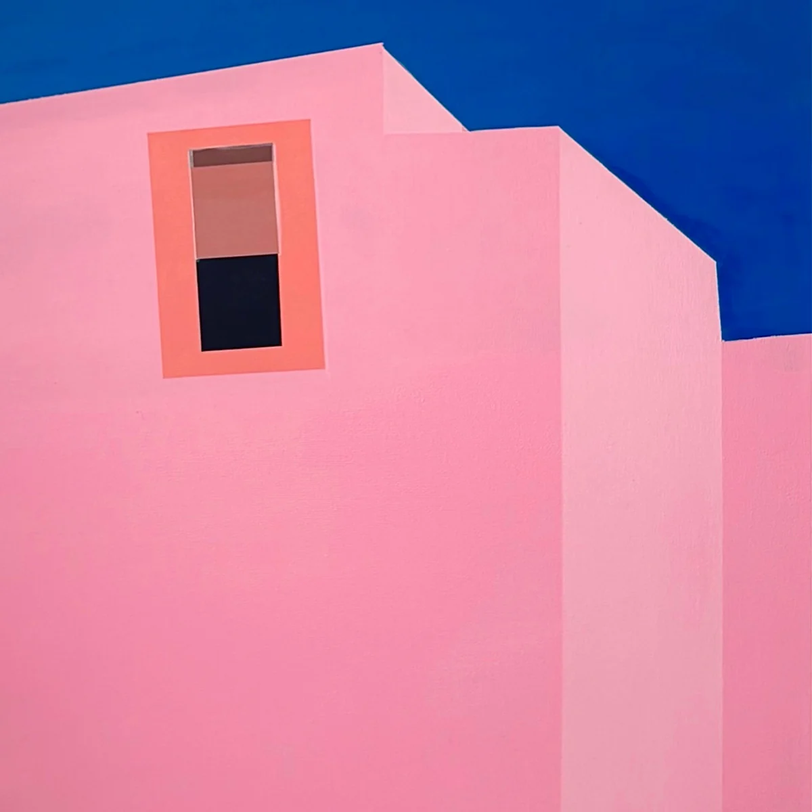

Sirine Siena
La peinture comme premier langage.
La pratique artistique nourrit ma vision de la communication : composer une image, créer une tension, donner envie de s'approcher. Exposante à la Galerie Image In'Air, Paris — 2023–2024.

THE DOOR
Architecture, couleur franche et seuil imaginaire. Acrylique sur toile
PINK FACADE
Façade rose, ciel bleu, minimalisme solaire. Acrylique sur toile
RETRO DESERT
Une voiture rose, une route, une image comme affiche. Nostalgie et liberté. Acrylique sur toile
PINK DELUSION
Rose, paysage mental et matière lumineuse. L'espace comme état d'âme. Acrylique sur toile
L'ENFANT
Regard frontal, silence, présence. La première grande toile — exposée à la Galerie Image In'Air. Acrylique sur toileRecherche d'alternance
Sirine Siena — Peintures
Exposante à la Galerie Image In'Air (Paris, 2023–2024).
Me contacter